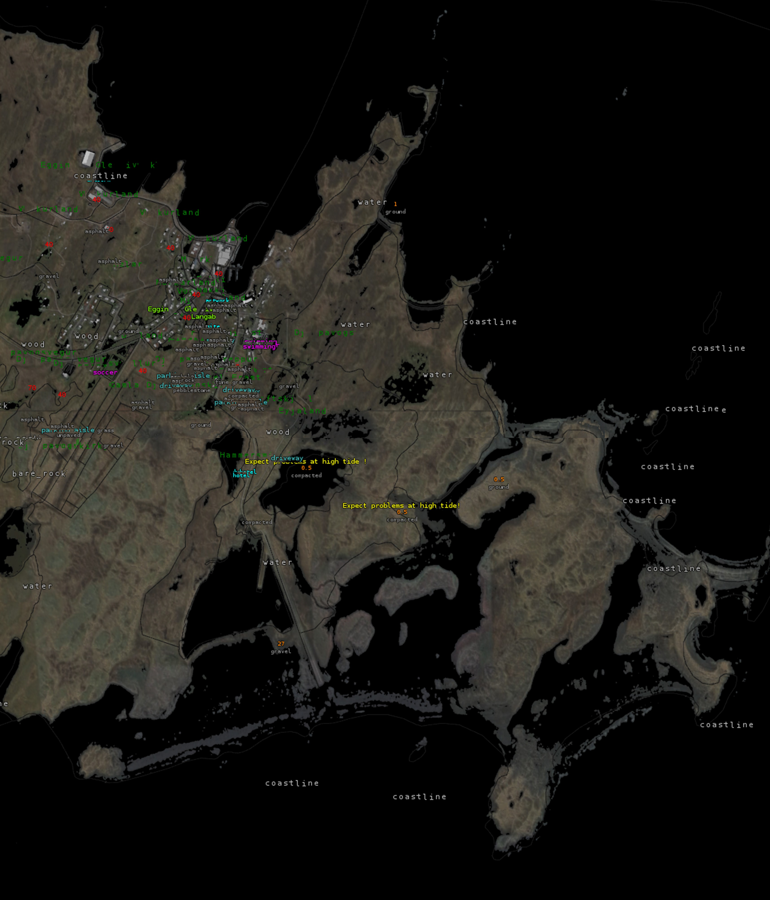

The project is situated within one of Iceland’s most ecologically delicate coastal corridors, where the landscape is defined not by emptiness but by continuous movement—of tides, winds, migratory paths, and working communities. Places such as Hamarinn, Hálsaskógur, Buðavík, Djúpivogur Harbour, Búlandsnes, and Gleðivík form a connected system of wetlands, fjord edges, rocky outcrops, and human infrastructure.

Our ecological strategy is grounded in preserving the existing harmony between the machine, the human, and nature.